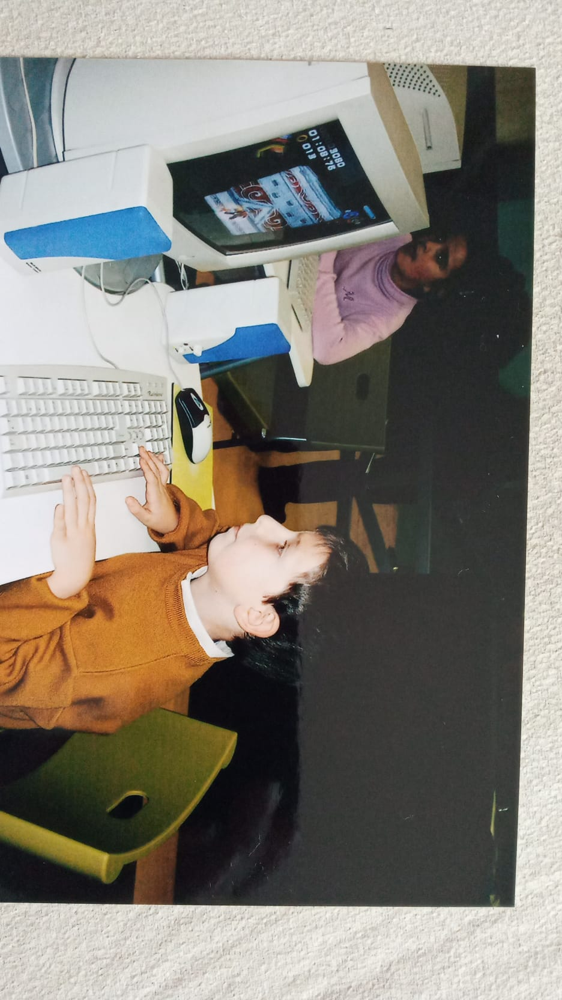

Quiero hacer de esta, una entrada especial, algo especial para mí, contar una parte de mi historia y lo que me ha guiado a ser lo que soy hoy, con mi forma de ver la vida, mi trabajo, mis sueños y aspiraciones. Esta es una entrada personal que he querido realizar para agradecerme a mí mismo, ahora que he cumplido los 23, el haber disfrutado, perseguido y luchado por algo tan especial para mí como son los videojuegos.
Los inicios: Años 2000
Me acuerdo como si fuese ayer de mi primera videoconsola portátil, una Game Boy Advance, y de mi primer videojuego, Pokémon Azul. Fue un regalo de Navidad en casa de mis abuelos y no sabía que algo aparentemente tan sencillo iba a darme tantas horas de buenos momentos. Apenas tenía 8 años, estaba en la primaria, y ya tenía unas ganas tremendas de llegar a casa, soplar el cartucho y comenzar mis andanzas virtuales. Cuando no sabía cómo continuar, molestaba a mi madre para que me ayudase a atrapar ese Pokémon que no podía vencer. Más adelante, llegaron las revistas y las guías de Nintendo, que compraba todos los meses en el kiosco más cercano a la escuela para poder estar al día con las novedades del mundillo friki.
La secundaria trajo consigo muchas inseguridades. Al igual que muchos, por esa época, jugar videojuegos era algo de "raros" y gente "sin vida social", lo que dio lugar a burlas y risas por parte de algunos compañeros, haciendo que mi paso por esos años se convirtiese en algo que sufría en silencio. No fue hasta cuarto año, cuando decidí abrirme a mis padres y contarles cómo me sentía y el abuso que estaba sufriendo en el centro. Gracias a ellos, dejé atrás el daño que me causaba, y pude empezar a estudiar el bachillerato en un centro distinto.
La Salle: San Eutiquio, que era como se llamaba el nuevo instituto, me ayudó a recuperar las ganas de jugar videojuegos que había perdido en los años anteriores y me inspiró a comenzar a crear mis propias historias mientras terminaba mis estudios y decidía qué quería hacer a continuación.
Fue sin duda mi época dorada para probar y experimentar todo tipo de títulos: The Legend of Zelda, Mario Bros, Kid Icarus, Kirby, Donkey Kong, Rayman, o mi favorito, el erizo azul, Sonic (al que me gustaba imitar en Educación Física). También fui conociendo géneros como los de Plataformas, Puzzle, Rítmicos, MMO, FPS... y poco a poco fui ampliando mi repertorio y convirtiéndome en un conocedor de aventuras virtuales.
Ahora soy yo quien los crea
Una vez finalicé los estudios obligatorios, mis padres supieron ver en mí el potencial para dedicarme a esto, y me dieron la oportunidad de estudiar en una escuela de videojuegos, algo que en su momento era bastante novedoso, ya que no existían muchas universidades en España que ofrecieran este tipo de formación. Y creyeron en mí desde el principio, cuando ni siquiera yo mismo lo hacía.
Fue una época de crecimiento, tanto físico como intelectual y personal. Viví mi etapa universitaria rodeado de gente que amaba lo mismo que yo. Ya no era el raro, y entre mis compañeros fui descubriendo nuevas facetas de la industria que desconocía por completo y de las que me fui enamorando poco a poco, como el desarrollo indie, la gamificación y el campo de la Realidad Virtual y Aumentada.
El 'click' lo tuve en 2019, cuando comencé a ver aplicaciones de los videojuegos más allá del ocio, algo que sin duda avivó aún más mi interés e ilusión por ellos. Fue entonces cuando supe que quería dedicarme a cambiar el mundo y la vida de las personas utilizando los videojuegos como medio. El propio proyecto de fin de carrera fue una excelente oportunidad para ello, ya que trabajamos en un serious game de carácter histórico que relataba la vida de Harriet Tubman y la traía al presente, contada a través de un juego interactivo de sigilo y estrategia.
2020 supuso un auge para la transformación digital y tecnologías hasta entonces bastante experimentales y desconocidas, como la Realidad Virtual, que comenzaron a ver la luz con proyectos alucinantes que atrajeron mi atención. Me fui dando cuenta de que muchos utilizaban los videojuegos para llevar a cabo estas innovaciones. Decidí que era el momento de saltar al mundo profesional y aprovechar el momento para convertir mi pasión en mi profesión.
El resto es historia reciente. Actualmente, me encuentro manteniendo, coordinando y desarrollando software que, a través de experiencias en Realidad Virtual, permite crear simulaciones de las distintas familias profesionales de formación profesional, con el objetivo de reducir costes y permitir a colegios e institutos de toda España acceder a ejercicios y entornos que de otro modo no serían posibles, para poder poner en práctica lo aprendido en la teoría y su uso práctico. Es un proyecto pionero, innovador y desafiante, donde creo que, como me prometí en su momento, a través del videojuego estamos ayudando a que las personas reciban una formación distinta y de calidad.
Pensar que los videojuegos me iban a llevar hasta un lugar tan remoto como Cuenca, haciendo lo que hago, era impensable hace años, pero ahora estoy convencido de que esto es solo el principio. Gracias a todas esas historias que me han acompañado y siguen haciéndolo, estoy muy agradecido de haberme convertido en la persona que siempre quise ser, y de ser capaz de convertir mi vida en mi propio videojuego, donde quien lo cuenta, siempre soy yo.